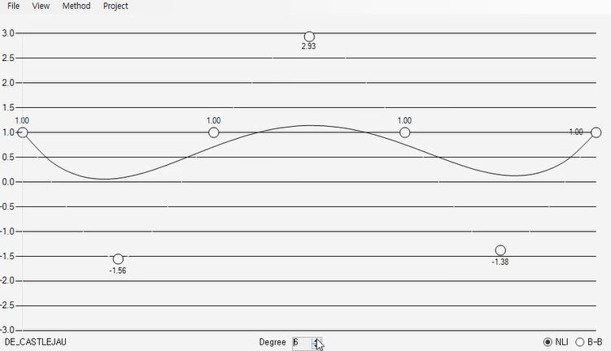
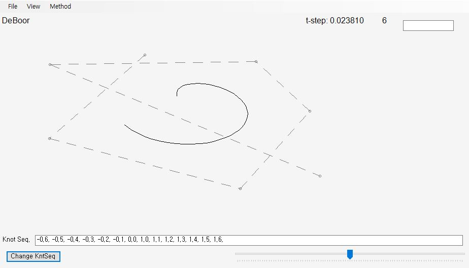
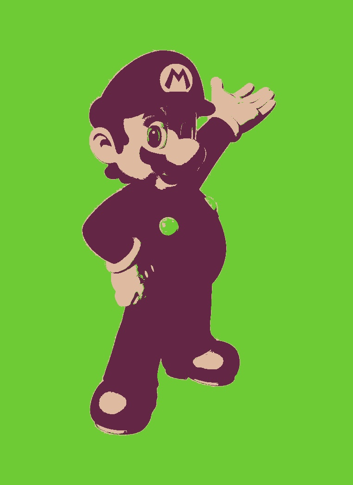
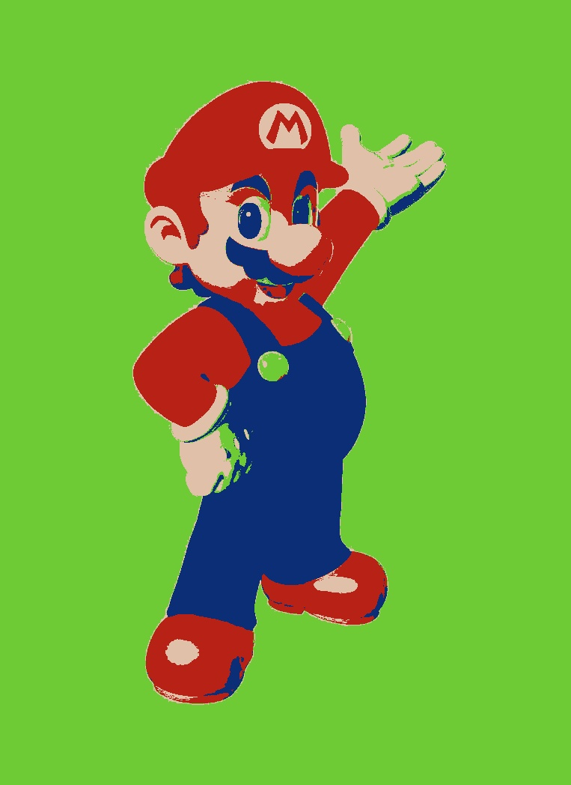
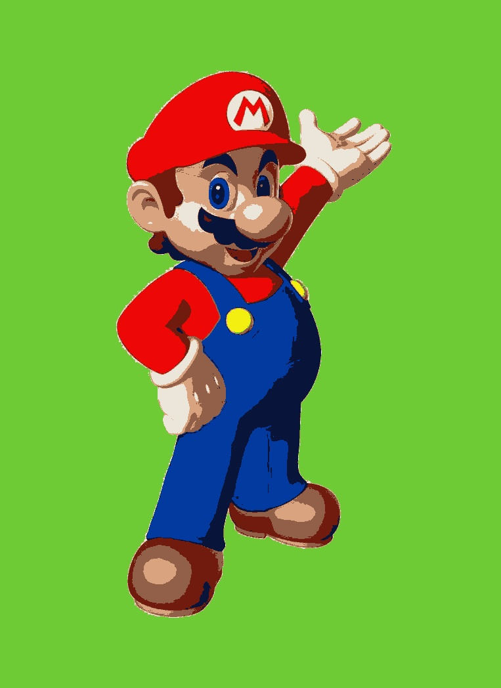
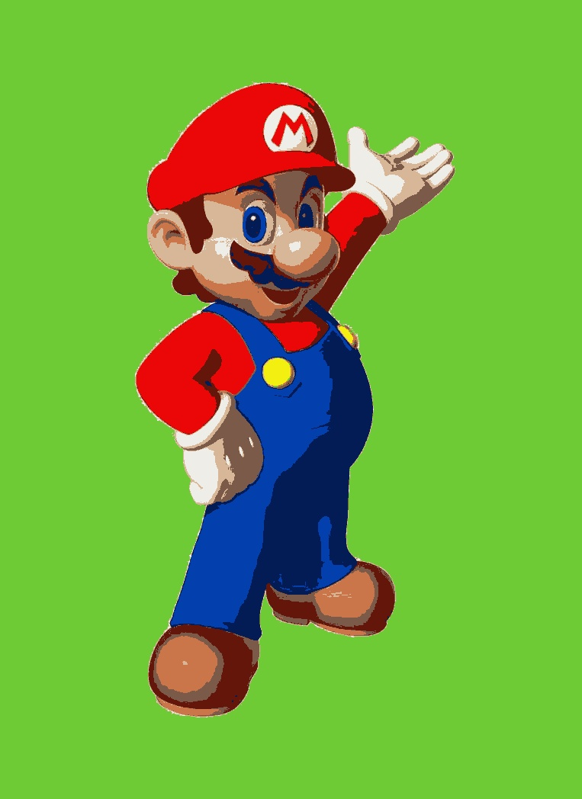

Math Project
Team size: Personal Project
Used: C# C++ OpenCV
Overview
Description
Curve Project
This project uses C#.
De Casteljau Algorithm for Polynomial Functions

De Casteljau Algorithm for Bezier Curves

Interpolating Polynomials
De Boor Algorithm for Polynomial Curves

3D version of Interpolating Polynomials
K-Means Clustering
This project uses C++ and OpenCV.
original Mario
k = 3
k = 4
k = 5
k = 6
k = 7
k = 8
k = 9
k = 10